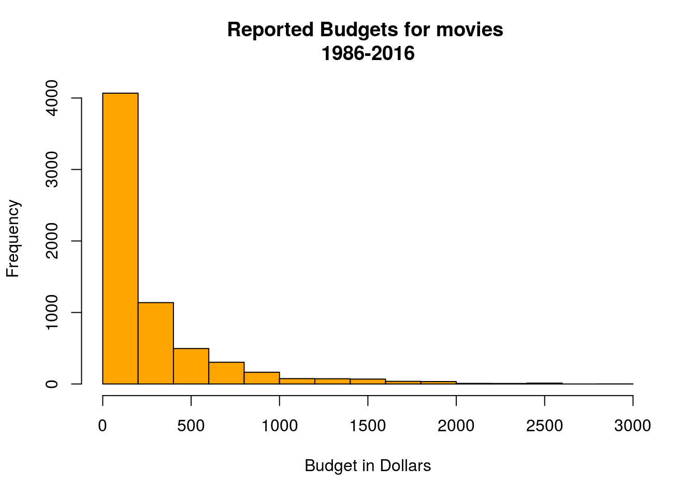
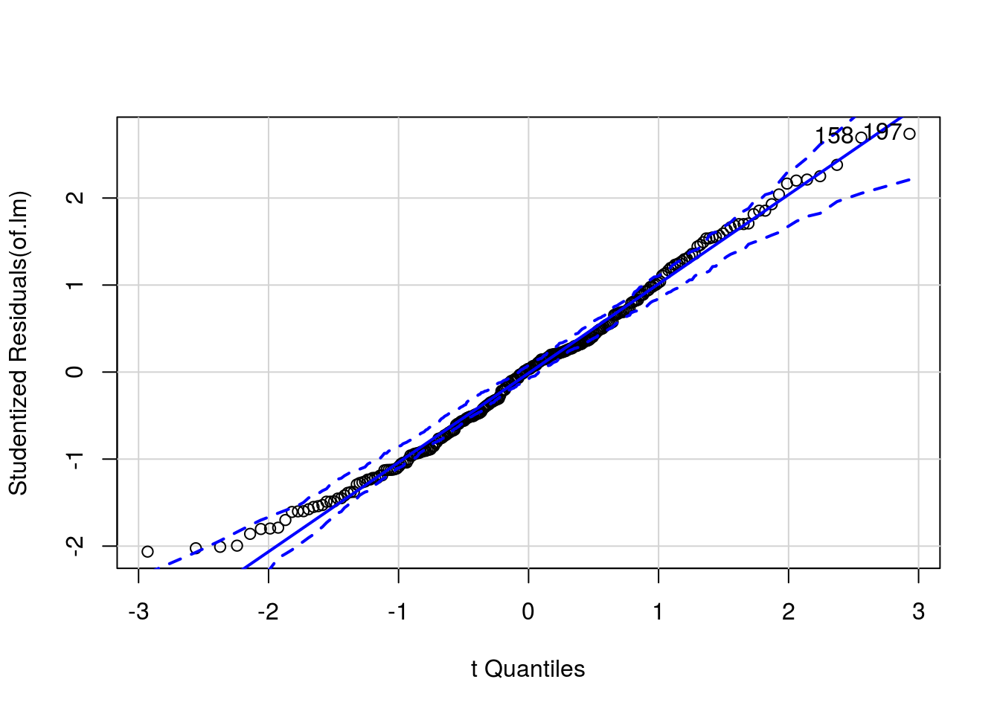
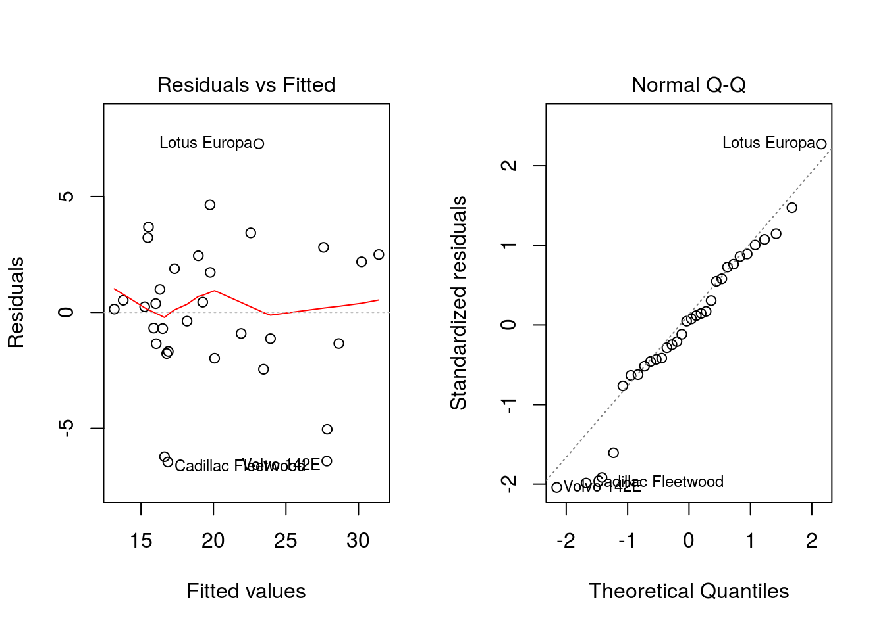
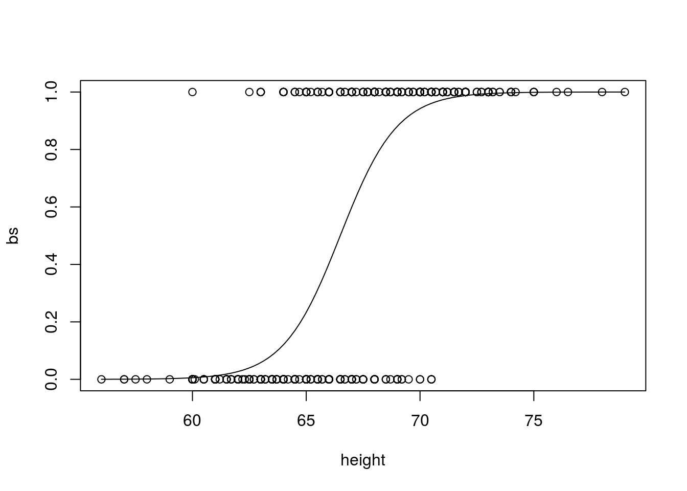
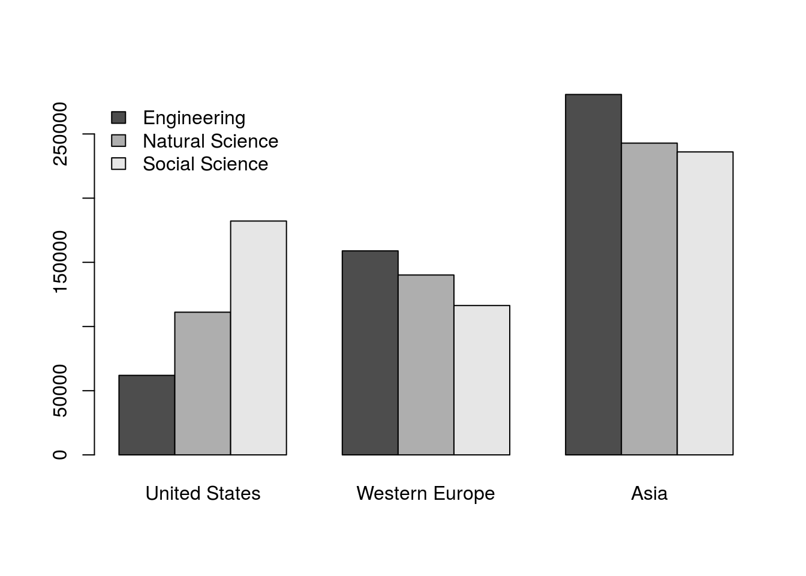

Table of Contents
Response Y: Quantitative
Icon
#include_graphics('./Images/QuantY.png')Display
Histogram
hist(mr4$budget/100000, xlab="Budget in Dollars", col="orange", main="Reported Budgets for movies \n1986-2016")
Boxplot
boxplot(mr4$budget/1000000, xlab="Budget in Millions of Dollars", col="orange", main="Reported Budgets for movies \n1986-2016",
horizontal=TRUE)
Inference (t-Test; Wilcoxon)
t-Test
pander(t.test(mr4$budget, mu = mean(mr4$budget), alternative = "g", conf.level = 0.95))| Test statistic | df | P value | Alternative hypothesis | mean of x |
|---|---|---|---|---|
| 0 | 6484 | 0.5 | greater | 25785610 |
Wilcoxon
pander(wilcox.test(mr4$budget, mu = mean(mr4$budget) , alternative = "g"))| Test statistic | P value | Alternative hypothesis |
|---|---|---|
| 7632496 | 1 | greater |
Response Y: Quantitative
Explanitory X: Binomial
Icon
##include_graphics('./Images/QuantYQualXg2.png')Display
Boxplot
boxplot(mr4$budget/1000000, xlab="Budget in Millions of Dollars", col="orange", main="Reported Budgets for movies \n1986-2016",
horizontal=TRUE)boxplot(budget~rating, data=mr4, ylab="MPAA Rating", xlab="Bugdet in Dollars",
col=c("gray","orangered"), main="",
horizontal=TRUE)
title("Reported Budgets for movies", line=2)
title("1986-2016", line=1)QQ Plots
par(mfrow=c(1,2))
qqPlot(mr4$score, xlab = "Ranked Z Scores", ylab = "IMDB Score", main = "IMDB Score")Inference (2 Sample t-test; 2 Sample Wilcoxon)
t-Test
W<-subset(Births78, wday == "Wed")
T<-subset(Births78, wday == "Thurs")
pander(t.test(W$births,T$births, mu = 0, alternative = "two.sided", conf.level = 0.95))| Test statistic | df | P value | Alternative hypothesis | mean of x | mean of y |
|---|---|---|---|---|---|
| 0.1443 | 98.94 | 0.8855 | two.sided | 9498 | 9484 |
Wilcoxon
pander(wilcox.test(births~wday, data = Births78, subset = wday %in% c("Wed", "Thurs")))| Test statistic | P value | Alternative hypothesis |
|---|---|---|
| 1354 | 0.9948 | two.sided |
Response Y: Quantitative
Explanitory X: Categorical with 3+ Levels
Icon
#include_graphics('./Images/QuantYQualXg3plus.png')Display
Favstats
pander::pander(favstats(score~rating, data = mr4))| rating | min | Q1 | median | Q3 | max | mean | sd | n | missing |
|---|---|---|---|---|---|---|---|---|---|
| G | 2.9 | 5.8 | 6.6 | 7.2 | 8.5 | 6.438 | 1.064 | 147 | 0 |
| PG | 1.5 | 5.4 | 6.3 | 7 | 8.6 | 6.143 | 1.13 | 951 | 0 |
| PG-13 | 1.9 | 5.7 | 6.3 | 6.9 | 9 | 6.254 | 1.006 | 1995 | 0 |
| R | 1.6 | 5.9 | 6.5 | 7.1 | 9.3 | 6.453 | 0.9418 | 3392 | 0 |
Boxplots
ggplot(data = mr4, aes(x = rating, y = score)) + geom_boxplot() + aes(colour = rating) + labs(title = "IMDB Score \nfor Movies 1986-2016\nGrouped by MPAA Rating") + coord_flip() +labs(x="MPAA Rating", y="IMDB Score") Residuals
DCAOV<-aov(score~rating, data = mr4)
par(mfrow=c(1,2))
plot(DCAOV, which=1:2, pch=16)Inference (ANOVA; Kruskal)
ANOVA
DCAOV<-aov(length ~ sex + domhand + sex:domhand, data = KidsFeet)
pander(DCAOV, caption = "ANOVA results")| Df | Sum Sq | Mean Sq | F value | Pr(>F) | |
|---|---|---|---|---|---|
| sex | 1 | 5.988 | 5.988 | 4.026 | 0.05257 |
| domhand | 1 | 1.723 | 1.723 | 1.158 | 0.2892 |
| sex:domhand | 1 | 6.205 | 6.205 | 4.172 | 0.04868 |
| Residuals | 35 | 52.05 | 1.487 | NA | NA |
Kruskal-Wallis
pander(kruskal.test(price~ fuel, data=SaratogaHouses))| Test statistic | df | P value |
|---|---|---|
| 159.7 | 2 | 2.136e-35 * * * |
kruskal.test(price~ fuel, data=SaratogaHouses)##
## Kruskal-Wallis rank sum test
##
## data: price by fuel
## Kruskal-Wallis chi-squared = 159.66, df = 2, p-value < 2.2e-16Response Y: Quantitative
Explanitory X: Quantitative
Icon
#include_graphics('./Images/QuantYQuantX.png')Display
plot(waiting ~ eruptions, data=faithful)
of.lm <- lm(waiting ~ eruptions, data=faithful)
abline(of.lm)par(mfrow=c(1,2))
plot(of.lm, which=1:2)par(mfrow = c(1,1))
qqPlot(of.lm)
Inference (Linear Regression)
pander(summary(of.lm))| Estimate | Std. Error | t value | Pr(>|t|) | |
|---|---|---|---|---|
| (Intercept) | 33.47 | 1.155 | 28.99 | 7.136e-85 |
| eruptions | 10.73 | 0.3148 | 34.09 | 8.13e-100 |
| Observations | Residual Std. Error | \(R^2\) | Adjusted \(R^2\) |
|---|---|---|---|
| 272 | 5.914 | 0.8115 | 0.8108 |
Response Y: Quantitative
Explanitory X1: Quantitative
Explanitory X2: Categorical
Icon
#include_graphics('./Images/QuantYMultX.png')Display
lmcars <- lm(mpg ~ qsec + am + qsec:am, data=mtcars)
lmcars##
## Call:
## lm(formula = mpg ~ qsec + am + qsec:am, data = mtcars)
##
## Coefficients:
## (Intercept) qsec am qsec:am
## -9.010 1.439 -14.511 1.321par(mfrow=c(1,2))
plot(lmcars, which=1:2)
par(mfrow = c(1,1))
lmcars$coefficients## (Intercept) qsec am qsec:am
## -9.009861 1.438542 -14.510686 1.321415b<-lmcars$coefficients
palette(c("blue","red"))
plot(mpg ~ qsec,data=mtcars, col=as.factor(mtcars$am),pch=16)
abline(b[1], b[2], col="blue")
abline(b[1]+ b[3],b[2]+ b[4], col="red")
legend("topright",c("Automatic","Manual"), lty=1, lwd=5, col=palette(), cex=0.7, title="Transmission")
Inference (Multiple Linear Regression)
summary(lmcars)##
## Call:
## lm(formula = mpg ~ qsec + am + qsec:am, data = mtcars)
##
## Residuals:
## Min 1Q Median 3Q Max
## -6.4551 -1.4331 0.1918 2.2493 7.2773
##
## Coefficients:
## Estimate Std. Error t value Pr(>|t|)
## (Intercept) -9.0099 8.2179 -1.096 0.28226
## qsec 1.4385 0.4500 3.197 0.00343 **
## am -14.5107 12.4812 -1.163 0.25481
## qsec:am 1.3214 0.7017 1.883 0.07012 .
## ---
## Signif. codes: 0 '***' 0.001 '**' 0.01 '*' 0.05 '.' 0.1 ' ' 1
##
## Residual standard error: 3.343 on 28 degrees of freedom
## Multiple R-squared: 0.722, Adjusted R-squared: 0.6923
## F-statistic: 24.24 on 3 and 28 DF, p-value: 6.129e-08pander(lmcars)| Estimate | Std. Error | t value | Pr(>|t|) | |
|---|---|---|---|---|
| (Intercept) | -9.01 | 8.218 | -1.096 | 0.2823 |
| qsec | 1.439 | 0.45 | 3.197 | 0.003432 |
| am | -14.51 | 12.48 | -1.163 | 0.2548 |
| qsec:am | 1.321 | 0.7017 | 1.883 | 0.07012 |
Response Y: Binomial
Explanitory X: Quantitative
Icon
#include_graphics('./Images/BinomYQuantX.png')Display
HG<-Galton
HG$bs<-as.integer(Galton$sex)-1
HG$bs<-as.integer(HG$bs)
h.glm <- glm(bs ~ height, data=HG, family=binomial)
b<-h.glm$coefficients
plot(bs~ height, data=HG)
curve(exp(b[1]+b[2]*x)/(1+exp(b[1]+b[2]*x)), add=TRUE)
pm<-predict(h.glm, data.frame(height=65), type='response')Inference (Logistic Regression)
pander(summary(h.glm))| Estimate | Std. Error | z value | Pr(>|z|) | |
|---|---|---|---|---|
| (Intercept) | -52.98 | 3.402 | -15.57 | 1.118e-54 |
| height | 0.7968 | 0.05117 | 15.57 | 1.136e-54 |
(Dispersion parameter for binomial family taken to be 1 )
| Null deviance: | 1243.8 on 897 degrees of freedom |
| Residual deviance: | 626.2 on 896 degrees of freedom |
library(ResourceSelection)
pander(hoslem.test(h.glm$y, h.glm$fitted, g=10))| Test statistic | df | P value |
|---|---|---|
| 1.666 | 8 | 0.9896 |
# Note: doesn't give a p-value for g >= 7, default is g=10.
# Larger g is usually better than smaller g.Response Y: Binomial
Explanitory X1: Quantitative
Explanitory X2: Categorical
Icon
#include_graphics('./Images/BinomYMultX.png')Display
library(robustbase)## Warning: package 'robustbase' was built under R version 3.4.4FSP.glm <- glm(participation ~ income + tenancy , data=foodstamp, family=binomial)
b<-FSP.glm$coefficients
pvLR<-coef(summary(FSP.glm))[2,4]
hlpv<-hoslem.test(FSP.glm$y, FSP.glm$fitted)$p.value
plot(participation ~ income, data=foodstamp, pch=16, cex=0.5, xlim=c(0,5000), xlab= "income", ylab="Food Stamp Program")
curve(exp(b[1] + b[2]*x)/(1+exp(b[1] + b[2]*x)),from=0, to=5000, add=TRUE, col='Blue')
curve(exp(b[1]+b[3] + (b[2])*x)/(1+exp(b[1]+b[3] + (b[2])*x)),from=0, to=5000, add=TRUE, col='red')
legend("right", legend=c("Not Own Home", "Own Home"), col=c("Blue","red"), lty=1)table(foodstamp$income, foodstamp$tenancy)##
## 0 1
## 0 1 0
## 84 0 1
## 107 0 1
## 125 1 0
## 150 1 0
## 167 0 1
## 168 0 1
## 169 1 0
## 176 1 0
## 177 1 0
## 184 1 0
## 187 0 1
## 188 0 1
## 196 1 1
## 197 1 1
## 198 1 0
## 200 1 0
## 201 1 0
## 203 1 0
## 205 1 0
## 211 0 1
## 212 0 1
## 214 1 0
## 220 0 1
## 221 1 0
## 230 0 1
## 233 0 2
## 235 0 2
## 242 1 0
## 248 1 0
## 250 0 1
## 260 0 2
## 264 1 0
## 266 1 0
## 271 0 1
## 273 0 2
## 274 1 0
## 285 1 1
## 286 1 0
## 287 0 1
## 291 0 1
## 295 0 1
## 296 0 1
## 307 0 1
## 334 1 0
## 346 0 1
## 350 1 0
## 354 0 1
## 356 1 0
## 372 1 0
## 373 0 1
## 379 0 1
## 385 0 1
## 386 1 0
## 426 0 1
## 429 0 1
## 430 1 0
## 435 0 1
## 440 0 1
## 443 1 0
## 444 0 1
## 449 0 1
## 450 1 0
## 452 1 0
## 453 1 0
## 458 0 1
## 459 0 1
## 460 0 1
## 462 1 0
## 465 0 1
## 471 0 1
## 476 0 2
## 477 0 2
## 482 0 1
## 489 0 1
## 495 0 1
## 499 0 1
## 500 0 1
## 512 1 0
## 517 0 1
## 518 0 1
## 519 0 1
## 520 1 0
## 521 0 1
## 523 0 1
## 534 1 0
## 540 1 0
## 575 1 0
## 580 0 1
## 581 1 0
## 586 1 0
## 589 0 1
## 596 0 1
## 607 0 1
## 611 1 0
## 613 1 0
## 664 0 1
## 683 0 1
## 685 1 0
## 697 0 1
## 704 1 0
## 714 0 1
## 735 1 0
## 797 0 1
## 885 1 0
## 893 2 0
## 943 0 1
## 977 1 0
## 992 0 1
## 1061 0 1
## 1143 0 1
## 1170 0 2
## 1179 0 1
## 1200 0 1
## 1202 0 1
## 1228 0 1
## 1251 0 1
## 1266 0 1
## 1410 0 1
## 1427 1 0
## 1445 0 2
## 1504 0 1
## 1578 0 1
## 1644 0 1
## 1653 0 1
## 1661 0 1
## 1680 0 1
## 1715 0 1
## 1765 0 1
## 1980 0 1
## 2165 0 1
## 2331 0 1
## 2556 0 1
## 2697 0 1
## 2995 0 1
## 3525 0 1
## 3556 0 1
## 4533 0 1pchisq(131.90, 149)## [1] 0.1605462pchisq(106.90, 147)## [1] 0.005333273pchisq(131.90-106.65, 2)## [1] 0.9999967The odds of participating in food stamps if you own a home is 0.1583831 of the odds of participating in food stamps if you do not own a home. This makes it 6.313803 times more likely to participate in food stamps if you do not own a home even if you have the same income.
Inference (Multiple Logistic Regression)
pander(summary(FSP.glm))| Estimate | Std. Error | z value | Pr(>|z|) | |
|---|---|---|---|---|
| (Intercept) | 0.07173 | 0.4671 | 0.1536 | 0.878 |
| income | -0.001693 | 0.0009464 | -1.789 | 0.07358 |
| tenancy | -1.843 | 0.5225 | -3.527 | 0.0004205 |
(Dispersion parameter for binomial family taken to be 1 )
| Null deviance: | 131.9 on 149 degrees of freedom |
| Residual deviance: | 106.6 on 147 degrees of freedom |
pander(hoslem.test(FSP.glm$y, FSP.glm$fitted))| Test statistic | df | P value |
|---|---|---|
| 11.97 | 8 | 0.1527 |
2 Category
Icon
#include_graphics('./Images/QualYQualX.png')Display
education <- cbind( `United States` = c(Engineering = 61941, `Natural Science` = 111158, `Social Science` = 182166), `Western Europe` = c(Engineering = 158931, `Natural Science` = 140126, `Social Science` = 116353), Asia = c(280772, 242879, 236018))
chisq.ed <- chisq.test(education)
barplot(education, beside=TRUE, legend.text=TRUE, args.legend=list(x = "topleft", bty="n"))
barplot(chisq.ed$residuals, beside=TRUE, legend.text=TRUE, args.legend=list(x = "topleft", bty="n"))Inference (Chi-square)
chisq.ed$expected ## United States Western Europe Asia
## Engineering 116455.2 136170.6 249018.1
## Natural Science 114718.5 134139.9 245304.5
## Social Science 124091.2 145099.4 265346.3chisq.ed##
## Pearson's Chi-squared test
##
## data: education
## X-squared = 69890, df = 4, p-value < 2.2e-16chisq.ed$residuals## United States Western Europe Asia
## Engineering -159.74613 61.67899 63.632829
## Natural Science -10.51231 16.34414 -4.897263
## Social Science 164.86059 -75.46591 -56.935221